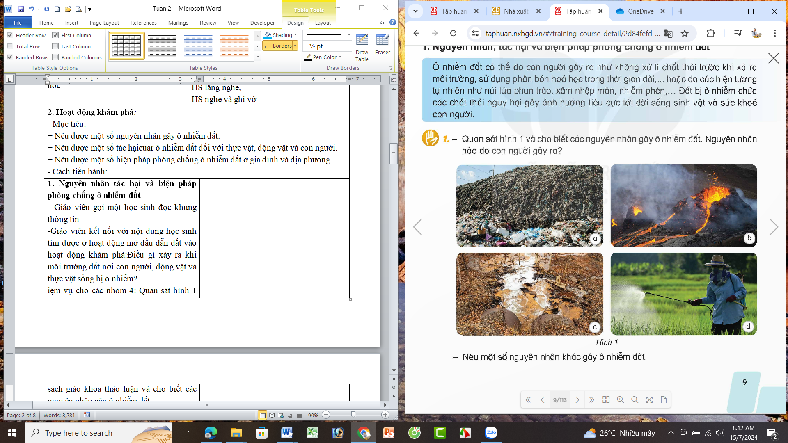
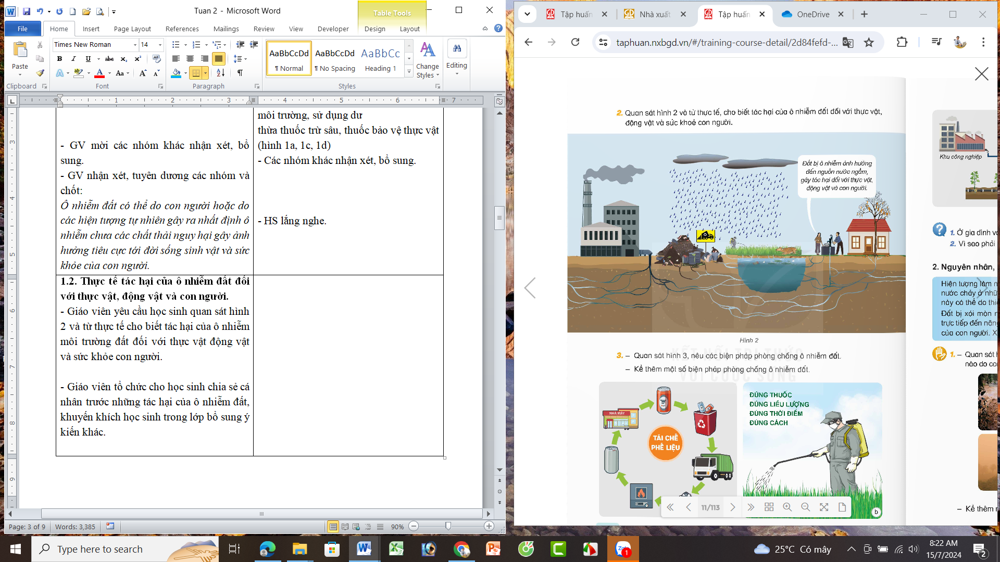
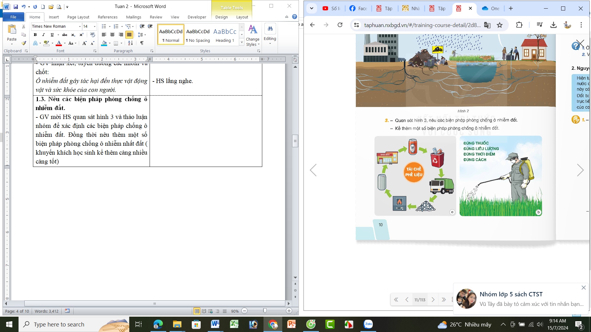
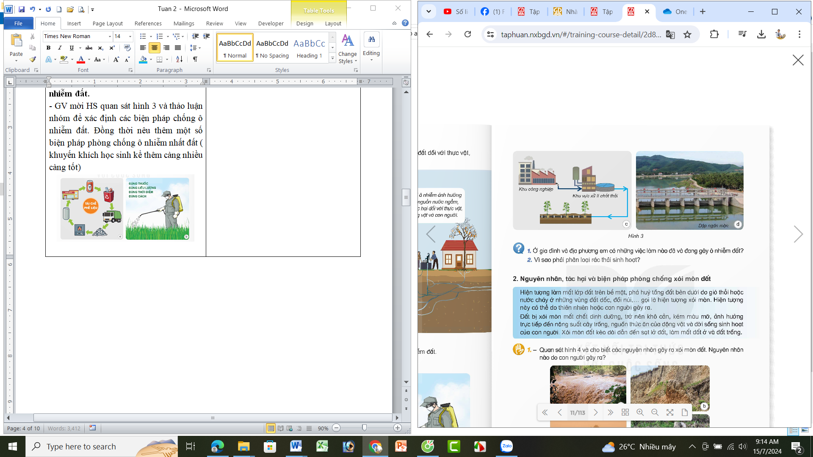

KHOA HỌC TUẦN 2
Thời gian áp dụng: Từ ngày ............... đến ngày ....................
BÀI 2: Ô NHIỄM XÓI MÒN ĐẤT VÀ BẢO VỆ MÔI TRƯỜNG ĐẤT (T1)
I. YÊU CẦU CẦN ĐẠT
1. Năng lực đặc thù
- Nêu được nguyên nhân, tác hại của ô nhiễm xói mòn đất, biện pháp chống ô nhiễm xói mòn đất.
- Đề xuất thực hiện được việc làm giúp bảo vệ môi trường đất và vận động những người xung quanh cùng thực hiện
2. Năng lực chung
- Tự chủ và tự học: Tích cực và chủ động tìm hiểu về các nguyên nhân tác hại do ô nhiễm xói mòn đất và biện pháp bảo vệ môi trường đất qua các hoạt động sưu tầm tranh ảnh tư liệu...
- Giải quyết các vấn đề sáng tạo:Đề xuất, thực hiện được việc làm giúp bảo vệ môi trường đất giao tiếp và hợp tác tham gia nhiệm vụ nhóm chia sẻ trình bày kết quả
3. Phẩm chất
- Phẩm chất chăm chỉ: Chuẩn bị bài trước khi đến lớp.
- Phẩm chất trách nhiệm: Hoàn thành các nhiệm vụ tự học cá nhân, nắm được và thực hiện tốt nhiệm vụ khi làm việc nhóm.
II. ĐỒ DÙNG DẠY HỌC
- Giáo viên: Video về bảo vệ môi trường (nếu có); các hình ảnh trong sách giáo khoa, thông tin Sưu tầm về ô nhiễm và xói mòn đất; bản ô chữ nhạc phần khởi; động cây hoa lá giấy bìa rác thải sinh hoạt thật hoặc minh họa, các loại thùng rác cho phần trò chơi;..
- Học sinh:Tranh ảnh thông tin sưu tầm về ô nhiễm và xói mòn đất; bảng điều tra về ô nhiễm đất đai địa phương; tranh vẽ, kịch biểu diễn thời trang tái chế bảo vệ môi trường đất.
III. CÁC HOẠT ĐỘNG DẠY HỌC
Hoạt động giáo viên | Hoạt động học sinh | |||||||||||||||||||||||||||||||||||||
1. Khởi động - Mục tiêu: tạo không khí hứng thú, phấn khởi, dẫn dắt HS vào bài học. - PPDH/KTDH: trò chơi - Cách tiến hành: | ||||||||||||||||||||||||||||||||||||||
- GV tổ chức trò chơi Tìm Chìa Khóa Vàng Cách chơi: Giáo viên đưa bảng ô chữ và yêu cầu học sinh tìm các chữ các từ có nghĩa trong bảng mỗi từ một chìa khóa vàng ai có câu trả lời đúng và nhanh nhất sẽ được thưởng một chiếc chìa khóa vàng sau khi tìm được bốn chìa khóa vàng sẽ mở ra được kho báu là nội dung của bài học
- GV nhận xét tuyên dương - GV đưa bốn chìa khóa đã tìm để tìm được để giới thiệu nội dung bài học | - HS nghe hướng dẫn cách chơi và quan sát bằng ô chữ.
+ 4 từ khóa cần tìm: ô nhiễm, xói mòn, bảo vệ, đất - HS lắng nghe, - HS nghe và ghi vở | |||||||||||||||||||||||||||||||||||||
2. Khám phá - Mục tiêu: + Nêu được một số nguyên nhân gây ô nhiễm đất. + Nêu được một số tác hại của ô nhiễm đất đối với thực vật, động vật và con người. + Nêu được một số biện pháp phòng chống ô nhiễm đất ở gia đình và địa phương. - PPDH/KTDH: thảo luận nhóm, trực quan, vấn đáp, chia sẻ - Cách tiến hành: | ||||||||||||||||||||||||||||||||||||||
1. Nguyên nhân tác hại và biện pháp phòng chống ô nhiễm đất. 1.1. Các nguyên nhân gây ô nhiễm đất. - Giáo viên mời một học sinh đọc khung thông tin. - Tổ chức cho HS thảo luận nhóm 4, quan sát hình 1 và cho biết các nguyên nhân gây ô nhiễm đất. - Mời đại diện các nhóm báo cáo kết quả thảo luận 
- GV mời các nhóm khác nhận xét, bổ sung. - GV nhận xét, tuyên dương các nhóm và chốt: Ô nhiễm đất có thể do con người hoặc do các hiện tượng tự nhiên gây ra nhất định ô nhiễm chưa các chất thải nguy hại gây ảnh hưởng tiêu cực tới đời sống sinh vật và sức khỏe của con người. 1.2. Thực tế tác hại của ô nhiễm đất đối với thực vật, động vật và con người. - GV tổ chức cho HS thảo luận nhóm đôi, quan sát hình 2 và từ thực tế cho biết tác hại của ô nhiễm môi trường đất đối với thực vật động vật và sức khỏe con người.  - GV mời các nhóm khác nhận xét, bổ sung. - GV nhận xét, tuyên dương các nhóm và chốt: Ô nhiễm đất gây tác hại đến thực vật động vật và sức khỏe của con người. 1.3. Nêu các biện pháp phòng chống ô nhiễm đất. - GV yêu cầu HS quan sát hình 3 và thảo luận nhóm đôi để xác định các biện pháp chống ô nhiễm đất. Đồng thời nêu thêm một số biện pháp phòng chống ô nhiễm đất khác - Mời các nhóm trình bày.   - GV mời các nhóm khác nhận xét, bổ sung. - GV nhận xét, tuyên dương các nhóm và chốt: Chúng ta cần có những biện pháp cụ thể và hiệu quả để phòng chống ô nhiễm đất - GV tổ chức cho HS chia sẻ thêm một số biện pháp khá giúp phòng chống ô nhiễm đất qua trò chơi truyền điện.
- GV nhận xét, tuyên dương, giới thiệu một số biện pháp khác. |
- 1 HS đọc yêu cầu bài.
- HS làm việc nhóm 4, quan sát hình 1 và thảo luận xác định các nguyên nhân gây ô nhiễm đất và báo cáo trước lớp: + Hình 1a: Đưa quá nhiều lượng rác thải sinh hoạt ra môi trường. + Hình 1b: Hiện tượng núi lửa phun trào dung nham làm đất bị khô cứng, khó trồng trọt. + Hình 1c: Nước chưa qua xử lí thải trực tiếp ra môi trường đất. + Hình 1d: Sử dụng dư thừa thuốc trừ sâu, thuốc bảo vệ thực vật. - HS: Nguyên nhân do con người gây ra: không xử lí rác và nước trước khi thải ra môi trường, sử dụng dư thừa thuốc trừ sâu, thuốc bảo vệ thực vật (hình 1a, 1c, 1d) - Các nhóm khác nhận xét, bổ sung. - HS lắng nghe.
- HS làm việc nhóm đôi, quan sát hình 2 và nêu tác hại của ô nhiễm môi trường đất đối với thực vật động vật và sức khỏe con người. + Đất bị ô nhiễm ảnh hưởng đến nguồn nước ngầm, gây tác hại đối với thực vật (cây trồng chậm lớn, chất lượng sản phẩm giảm); động vật (mắc các bệnh ngoài da, rời nơi ở hiện tại đến nơi khác để sinh sống làm gián đoạn chuỗi thức ăn); con người (có thể mắc các bệnh như ung thư, bệnh mãn tính, nhiễm độc gan và một số bệnh khác, ...).
- Các nhóm khác nhận xét, bổ sung. - HS lắng nghe.
- HS làm việc nhóm 2, thảo luận nhóm để xác định các biện pháp chống ô nhiễm đất. Đồng thời nêu thêm một số biện pháp phòng chống ô nhiễm đất - Các nhóm trình bày: + Hình 3a: Tái chế thuế liệu để làm giảm chất thải ra môi trường + Hình 3b: Hạn chế sử dụng thuốc trừ sâu thuốc bảo vệ thực vật. + Hình 3c: Xử lý chất thải tốt nghiệp trước khi đưa ra môi trường + Hình 3d: Ngăn chặn xâm nhập mặn ở các vùng đất ven biển.
- Các nhóm khác nhận xét, bổ sung.
- HS chia sẻ đáp án bằng trò chơi: Sử dụng sản phẩm sinh học như túi ni lông, túi màng bọc thực phẩm có thể phân hủy; rửa đất ở những vùng có ô nhiễm mặn... - HS lắng nghe.
| |||||||||||||||||||||||||||||||||||||
3. Luyện tập - Mục tiêu: + Nêu được một số những việc làm đã và đang gây ô nhiễm môi trường đất ở gia đình và địa phương. + Nêu được ý nghĩa của việc phân loại rác thải sinh hoạt - PPDH/KTDH: chia sẻ, vấn đáp - Cách tiến hành: | ||||||||||||||||||||||||||||||||||||||
2. Luyện tập - GV mời HS đọc yêu cầu bài. Cả lớp làm việc cá nhân. Suy nghĩ và nêu những việc làm đã và đang gây ô nhiễm môi trường đất ở gia đình và địa phương.
- GV mời HS khác nhận xét, bổ sung. - Giáo viên nhận xét, tuyên dương, chốt: Chúng ta cần tránh các việc làm gây ô nhiễm môi trường đất ở gia đình và địa phương. 2.Vì sao phải phân loại rác thải sinh hoạt. - GV nêu vấn đề, các nhóm cùng thảo luận: Vì sao phải phân loại rác thải sinh hoạt khuyến khích học sinh đưa ra những lập luận ý kiến của mình để làm rõ vấn đề.
- GV chốt kiến thức: Chúng ta cần phân loại và xử lý rác thải cho hợp lý để bảo vệ môi trường đất |
- 1 HS đọc yêu cầu bài. - Cả lớp làm việc cá nhân, HS ghi những việc làm đã và đang gây ô nhiễm môi trường đất ở gia đình và địa phương vào vở và nêu trước lớp: - HS lắng nghe, góp ý, bổ sung
- HS trả lời: Cần phân loại rác thải sinh hoạt để có thể dễ dàng vận chuyển, tái chế; góp phần giảm lượng các rác thải ra môi trường, nâng cao ý thức của cộng đồng về bảo vệ môi trường. - HS lắng nghe
| |||||||||||||||||||||||||||||||||||||
4. Vận dụng - Mục tiêu: + Củng cố những kiến thức đã học trong tiết học để học sinh khắc sâu nội dung. + Vận dụng kiến thức đã học vào thực tiễn. - PPDH/KTDH: thực hành - Cách tiến hành: | ||||||||||||||||||||||||||||||||||||||
- GV yêu cầu HS vẽ tranh về các biện pháp chống xói mòn đất theo nhóm 6. - Nhận xét, đánh giá tiết dạy. - Dặn dò về nhà: hoàn thiện bức tranh về các biện pháp phòng chống ô nhiễm đất. | - HS vẽ tranh theo nhóm.
- HS lắng nghe, rút kinh nghiệm | |||||||||||||||||||||||||||||||||||||
IV. ĐIỀU CHỈNH SAU BÀI HỌC
Hoạt động vận dụng tổ chức cho HS thực hành phân loại rác thải và giao nhiệm vụ vẽ tranh về nhà.